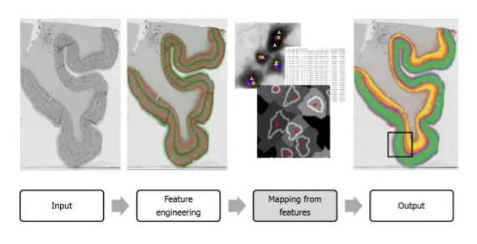
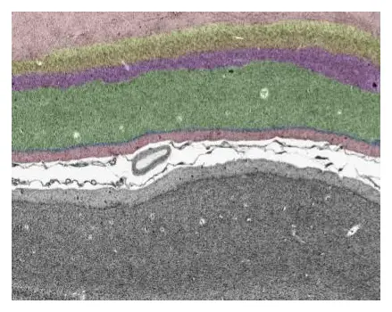

Visiting Scholar: from Zagreb to Montreal
Advancing neuron-centric analysis of human cortical cytoarchitecture
By Andrija Štajduhar
During my stay in Montreal, I focused on advancing a neuron-centric analysis of the BigBrain dataset, bringing my previous experience in segmenting cells with data from the Zagreb Collection, and leveraging explainable AI to explore and validate cutting-edge methodologies (fig. 1 and 2). A key part of my work was a comprehensive review of the critical data availability for this research, which provided a clear direction for future analyses. In terms of progress, I contributed to successfully creating a cellular density map for a 6x6x6mm cortical block (fig. 3), laying the groundwork for further feature extraction. Testing state-of-the-art segmentation methods has revealed areas requiring refinement, and we are moving forward with plans to validate these methods. The insights gained here directly align with the broader goals of the project, which include automating large-scale histological data analysis and enhancing our understanding of cortical organization.
Figure 1: Learning to map neuronal phenotype to cortical layers using a classical machine learning pipeline. The neuron representation, or phenotyping, is based on automatic neuron segmentation and analysis of morphological and textural features. This representation is then used as an input to a machine learning model which learned to solve the multiclass classification task by classifying neurons among the six layers of the cortex. The black rectangle frame indicates the portion of the section that was manually labeled by three experts and used as training data.
Figure 2: A high-resolution section of V1 cortical area with manually labeled layers. Such labels provide a basis for the development of supervised ML models for the automated classification of neurons and layer segmentation.
I collaborated with a PhD candidate Alejandro Salinas Medina to update and refine the codebase, ensuring the computational workflows are robust and scalable. I obtained great support from Paule-Joanne Toussaint, who instigated this collaboration, facilitated key introductions, provided strategic guidance and scientific inputs, as well as from Claude Lepage, who contributed technical solutions essential for advancing the computational aspects of the project. Together, we began developing a pipeline to validate cellular segmentation and quantification methods from our collaborators in Jülich against human-labeled data. This effort is a crucial step toward ensuring methodological accuracy.
A highlight of my stay was presenting our recent work at the Feindel Brain and Mind Seminar series with a talk titled Advancing Neuron-Centric Analysis of Human Cortical Cytoarchitecture with the BigBrain. This was an opportunity to disseminate our results, share our methodological advancements, and engage with experts in the field.
I also attended the Montreal AI and Neuroscience (MAIN) conference, where I established valuable connections with researchers and clinicians. These interactions have opened new doors for collaborative work and provided fresh perspectives on the clinical applications of our research. I also initiated collaborations with researchers at MILA and The Neuro, who bring complementary expertise to this project, but also create other research initiatives of my interest. Additionally, I gained insights into how medical education is organized at McGill university, which could inform our teaching and training programs at my home university.
Looking forward, we have established a strong framework for sustained collaboration. This includes the validation of segmentation methods, creation of new datasets and refinement of existing ones, and co-authoring publications to share our progress with the scientific community. The support and resources provided by The Neuro have been invaluable, and I’m eager to continue building on this years long partnership also in the years ahead.
Figure 3: Cellular density of a 3D reconstructed volume of V1 cortical area. On each high-resolution section, cells were automatically detected, and the average distance to the 50 nearest neighbors was computed, as a proxy for local cellular density.
Croatian Brain Research InstituteUniversity of Zagreb School of Medicine